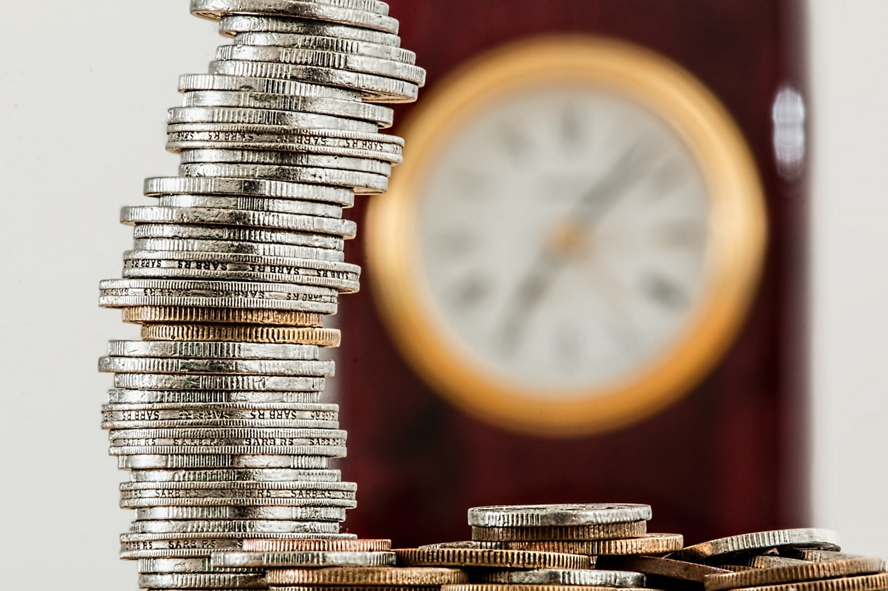

Intequinism and Utility Value
∞ ⋈ ∞ ∞ ⋈ ∞ ∞ ⋈ ∞
First Published: 31 July 2019
An article written and published at Medium.com, called "Ipparts Exchange (IPPAEX)" has now changed into an article about Africahead, because the ideas of Intequinism, are applicable only to Africahead Ipparts (AFA) brand tokens. Other brand tokens being listed on IPPAEX will be subject to other philosophies, to maximise those tokens' values.
Maximising utility value for consumers, means minimising the prices/royalties asked for utilities. With "utilities" i refer to products, consumers use and pay for. Books, e.g. are utilities. The less a product costs, the more the utility value is. Minimising prices via competition is an objective of capitalist economics, explained by Adam Smith. The problem of current capitalism is, however, imperialists, acting against consumers, hinder this minimisation process, with anti-competitive despotic behavior against fair competition. Ultimately it boils down to the use of illegal pragmatic violence, "the group" is guilty of, against "the individual" and "the people". Many consumers take sides with imperialist despotism, whilst choosing the mean (middle way) and becoming the mean (despots). The mean exists in being a consumer and being dependent for retirement, on public listed stock exchange companies.
Intequinism promotes minimum prices/royalties. According to Intequinism, prices/royalties are not minimised by competition among despots, against consumers ("the-individual" and "the people"), because despots compete among themselves, to have the most materialistically. They aim for maximum prices of the products they sell, whilst pitying others with charity. Prices are minimised according to Intequinism, primarily because i disliked, pitying others with donations. Minimising prices turned out to be a competition with self and despotism. Where is my limit, in order to give maximum utility value of my work, to other people. It raises the question; are people divided or not? Am i part of "the people" or not? "We the people" have some among us who chose the mean, and therefore they are Humpty Dumpty, sitting on the wall. I am now 50 and have been part of the people all my life, because i always had to budget. I have never been in a position where a budget for personal expenditure, was not in my mind. The level of budgeting differed substantially, from, including two restaurant meals per day every day, to no restaurant meals. That indicates the relativity of my budgeting i refer to, in claiming i have always been part of "the people". Definitions can also cause motivation for identifying more with nobility in the antique sense of the word, when "noble" and "honest" were synonyms. A problem then was, it was possible to be despotic and honest. The idea Love developed with democracy, to balance the idea Truth. The last 20 years i have also been part of "the-individual", apart from "the people". "The-group" exists in opposition to "the-individual" and "the people." "The-group" are the despots who chose the mean.
Ipparts Exchange (IPPAEX) is a new cryptocurrency exchange where brand tokens can be listed. Moyom (MYM) ERC20 Ethereum utility token, is the currency of IPPAEX. It is a solution to help solve the inequity of current capitalism. The exchange grew out of intequity (capital of ideas), a new word, formed by combining "integrity" and "equity"; The exchange is run on available infrastructure, until enough capital is available to build an own platform.
What is meant by brand token? The simplest way to explain it, is to refer to physical assets and monetary liabilities of an organisation or individual. When the liabilities are deducted from physical assets, the result is, the value, owners of an organisation own, or an individual owns. I will refer only to organisations, but most things can be applicable to an individual, who runs a business on his/her own. A problem in my view of using one's own name is, after death, a unique business name, not referring to an individual, is more marketable. A unique business name, not referring to an individual, carries value better over time, in my opinion. Personal preferance differ though. Brands, referring in name, to deceased individuals exist. This raises a question, i did not think about previously. I, for example, ceded all my copyrights of the past and the future to a close corporation (CC) called Moiom CC t/a Africahead. Currently i work to increase the brand value of Africahead. Did that cession legally include the use of my name, by only Africahead? That was not my intention, and if any doubt exists about that, this article confirms my intention; Africahead will control the use of my name after my death and Africahead controls the use of my name, whilst i am controlling Africahead. If a situation ever exists whereby i do not control Africahead, whilst i am alive, my intention with the cession, was not to sign my name away to Africahead. I mention these matters, partly because it is matters, organisations or individuals, who decide to list brand tokens on IPPAEX, can consider.
The Oxford Dictionary defines "going concern" as follows: "a business that is operating and making a profit. trying to sell the business as a going concern."
If organisations without saleable Intellectual Property are liquidated, physical assets are sold, and the creditors and the lenders are paid. What is left, goes to owners. If an organisation is not liquidated and it is sold as “going concern”, normally, the value is more than when it is liquidated. In accountancy the difference between the “going concern” value and the liquidation value, can be called goodwill, brand value etc. of the organisation. That difference can be made up of Intellectual Property assets, which cannot be seen on the balance sheet of the organisation. The value could be vested in a trade mark. It could be vested in the name of the owner who helped building the organisation. Just the fact; organisations are “going concerns”, gives organisations higher values than the liquidation values. “Going concern”, means basically, people can “make a living” by working in/for the organisation. Maybe patents and/or copyrights represent the difference-value between "going-concern" and liquidation values. Numerous explanations, depending on the circumstances, can show the difference between the “going concern” and liquidation values.
An important realization is, the difference-value can only be monetized by selling it. Selling it is the only way it can appear on a balance sheet. The difference-value can also be used to earn royalties, i.e. on copyrights, not recorded on a balance sheet. In Africahead's case however earning royalties, is not feasible, because my works are too opposed to the current socialist system, which degrades intequity (capital of ideas) in favor of labour and networking. International Accounting Standards prohibit the capitalisation of Intellectual Property assets on which royalties are applicable, unless it is sold. If royalties are applicable, an author can make a living from it, but royalties imply an author is within the system of royalties. My work does not resort in the royalty system, because i have sold only one book in about 5 years. Yet, words i coined, e.g. intequity, are used widely in the imperial system. That is partly why i am sure my work has a value, which can be monetized, even though royalties do not apply. Selling goodwill, is normally only possible, in the form of a “going concern”, but in my case i have been robbed of my "goodwill", with slanderous false gossip, a pragmatic way of competing. The fallacy, that i am "homosexual", e.g. was widely spread. Without a doubt it has to do with false gender theories doing the rounds, regarding the idea Truth. "Men must lie and be corrupt to be men".
Normally goodwill, brand value etc, can be sold if a whole organisation is sold, or at least a division, which can operate independently. I cannot do that, because a "pariah" has been made of me by "the-group". I have become an object of utility to "the-group". An idea-generating machine in their minds, probably. Such a division of society between those with human rights and those, who are "forced to be free", without human rights, make objects of humans. Modern secular utilitarian constitutions include this division among humans, with the "human" right to impart ideas from Socrates's "gods" and "goddesses" who have good ideas, recognized in the Eucharist/Mass. Organisations do not have utility value, because organisations can not directly be sacrificed and praised for ideas, as done during Eucharist/Mass. Good ideas always come from humans. Value of utility refers only to something consumers can use, for which the price must be minimised, according to Intequinism. Slavery, with good reason, is against the law.
It is at the selling of a "going concern" where IPPAEX becomes relevant. When a brandtoken is listed on IPPAEX, the difference-value (between "going concern" value and liquidation value) or part of it, can be sold, without selling a "going concern" (whole organisation or an independent division). Selling a division as "going concern", means breaking an organisation up or down, into more than one part(s). In order to hinder breaking down an organisation by dividing it, IPPAEX can be used to raise funds by monetizing brand values, goodwill, copyrights etc. If a brandtoken is listed, which represents a whole organisation, with all its divisions, it means, if the whole organisation is sold in the future, the sale will be on the condition that the brand or goodwill, sold in the form of a brandtoken, cannot be sold again. 48% of the Africahead brand value can therefore never be sold again in another form than AFA. This was my intention with Africahead Ipparts (AFA).
The fonetones website, e.g. with all the ringtones, subjected to copyrights, are parts of the Africahead brand and it contribute to the Africahead brand value. If i now, or the management of Africahead in the future, decides to sell fonetones, it could affect the value of the Africahead brand positively or negatively. It could be argued, because of that effect, caused by management of Africahead, holders of AFA should vote about such a sale. Not true; that is why AFA represents only 48% of the brand value in total. Management of Africahead controls 52% of the total brand value, therefore management can decide self to sell, e.g. fonetones, with 100% of the fonetones brand value, included in the sale. That was my intention, seen retrospectively, when i wrote the White Paper for AFA. Africahead is thus the brand mark at the top, carrying all the Intellectual Property value in Africahead, but management of Africahead can sell separate identifiable parts, 100%. Obviously such transactions must be at maximum selling prices, to benefit the holders of AFA maximally. It seems thus logically Intequinism's promotion of minimum prices, can only refer to royalties/prices; that is, everyday revenues of e.g. sales of ringtones and books. If the fonetones website is sold e.g., a maximum selling price must be negotiated, by Africahead's management, in order to respect holders of AFA, who want their investment value maximised. The difference with a share of a listed stock exchange company is; AFA ipparts, do not give a right to dividends. Shares represent maximum prices of utilities because dividends must be maximised. It is a flaw in the stock exchange system because it hinders minimum prices for maximum utility to consumers. Logically thus, according to Intequinism, the stock exchange system will come to an end. It can happen gradually, whilst investors move their investments elsewhere to, for example, IPPAEX, where competition for maximum utility value is not hindered, with maximum prices for products. Investments for retirement on IPPAEX, currently, is however too risky.
Although Intequinism aims to maximise utility value, Intequinism is not utilitarian philosophy, because the "essence" of utilitarian systems, is the sacrificing of the "Other", stealing of 'intelligence', printing of money, and lending/giving money to "brothers and sisters", who employ others, to develop stolen ideas.
Apart from the benefit, of capital being raised, on IPPAEX, another benefit is, the brandtokens can be traded on IPPAEX. The holders of the tokens, can thus hold the tokens if they think the brand value will increase, or they can sell the tokens if they think the tokens will decrease in value. There is thus a societal benefit, whereby the public, judges an organisation listed on IPPAEX, for maximum utility value to society. If an organisation lists a brandtoken, it subjects itself to opinions of the public, similar to a listed company on a stock exchange. This raises a question. What will happen if Africahead decides e.g. to list a brandtoken for fonetones? It could be a way for society to identify fonetones employees, subjecting them to societal opinion/trading of fonetones brandtokens, but yet, keep the division within Africahead, for management purposes. Such an issue will have to be done like a rights issue of shares to holders of AFA, because the fonetones value is currently included in the AFA value. Hypothetically, if fonetones brandtokens are listed on IPPAEX the AFA tokens' value should decrease with the new value of fonetones brandtokens.
Valuation theories, for brandtokens are not the same as valuation theories for securities. Brandtokens consist of countable units, called ipparts (intellectual property parts). The most obvious reason ipparts are not valued like securities is, physical assets are not included in the values of ipparts. IPPAEX, for example, has as foundation, the philosophy Intequinism. According to Intequinism, minimum IPPAEX exchange fees will maximise the value of Africahead Ipparts (AFA) brandtokens, because minimum costs, for the listing of other brandtokens, will leave more cash in the bank accounts of organisations, listing brandtokens, and in the pockets of buyers/sellers of brandtokens.
From this article it can be derived, unless i am now mistaken, that according to the logic of Intequinism, minimum prices apply only to everyday selling prices, for everyday use/utility of products and services. When a part of Africahead e.g. fonetones or the copyright on a book, or copyright on a ringtone/fonetone is sold, maximum value must be negotiated for, because of AFA holders. It indicates something about utilitarian philosophy, Intequinism is not. It implies own Intellectual Property does not have utility value, but the representations, e.g. books thereof has, utility value. The value of own Intellectual Property must be maximised, and the utility value of representations thereof, maximised, with minimum prices. The ability of organisations and individuals to distribute utility, must currently be maximised, according to Intequinism.